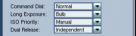
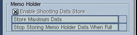
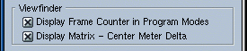
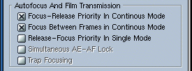
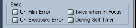
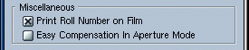

|
Settings
ToolbarThe information displayed in the Settings window, is controlled via this toolbar. The buttons have the following behavior:
Basic SettingsThere are four basic settings allowing you to customize the behavior of your camera.
Memo HolderThe camera can store the shooting data about each frame you take. By default, it stores no data. These controls will allows you to enable and customize the feature. However there are two limitations:
The memo holder's size is limited. If the memo holder fills, the camera offers two possibilities to handle the situation. By default the camera will Stop Storing Memo Holder Data When Full. The second option will Force Download When Memo Holder is Full by preventing you from taking any further pictures. If this happens but you cannot download the data, it is possible to override the feature by turning off then back on the camera. ViewfinderTwo viewfinder options are available. The
first will Display the Frame Counter in Program Modes,
replacing the Vari Program Mode Indicator.
Auto Focus and Film TransportIn the Continuos Shooting Mode, pressing
the shutter release will fire the camera even if the subject is out of
focus. By enabling Focus-Release priority in Continuos Mode the
camera will first focus on the subject and then fire the shutter. This way
the first frame will be in focus, but the camera will not refocus between
frames. By enabling Focus Between Frames in Continuos Mode, you
can make sure that all frames taken are in focus.
BeeperThis feature is perhaps the most useless among the custom settings. By default the camera beeper is disabled, however you can customize it, so that the camera will beep:
Miscellaneous |
||||||||||||||||||||||||||||||||||||||||||||
|
If your camera is equipped with an MF-26 Control Back you can enable the Print of the Roll Number on the beginning of the Film. The second option, will enable Easy Compensation In Aperture Mode. In Aperture Priority Mode you will be able to set the compensation by the command dial, and see in the viewfinder the exposure compensation. This setting will override the Display Matrix - Center Meter Delta viewfinder option. The Easy Compensation will be added to the compensation set via the exposure compensation button.
|